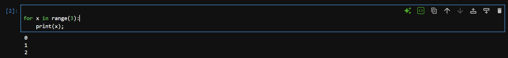
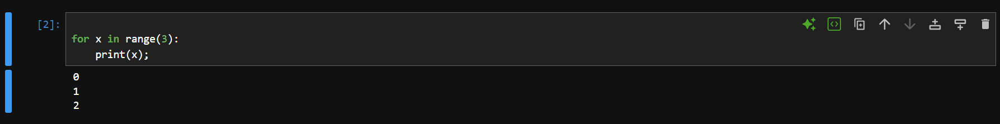

Edit Mode vs Command Mode
Every cell in Jupyter can be in one of two modes. The colored border on the left side of the cell tells you which mode you are in.
Edit Mode — Green Border
You are typing inside the cell. You can write and edit code. Enter edit mode by clicking inside a cell or pressing Enter.

Command Mode — Blue Border
You are navigating between cells. Keyboard shortcuts work here (like pressing B to add a cell below). Enter command mode by pressing Esc.

Esc to go from Edit → Command mode. Press Enter to go from Command → Edit mode.
How to Run a Cell
A cell is the basic building block of a Jupyter Notebook. Each cell holds a piece of code or text, and you run them one by one or all at once.
| Shortcut | Action | When to use |
|---|---|---|
Ctrl + Enter | Run current cell, stay on it | Experimenting — re-run the same cell multiple times |
Shift + Enter | Run current cell, move to next | Working through a notebook top to bottom |
Alt + Enter | Run cell, insert new cell below | Adding new code after the current cell |
| ▶ Run (toolbar) | Run current cell | When you prefer using the mouse |
Ctrl + Enter — run the cell and stay on it. Great for experimenting and re-running the same cell.
Execution Order — The [ ] Counter
On the left side of each code cell you will see brackets like [ ], [1], [*]. These show the execution state.
[ ] — Not Run Yet
The cell has not been executed since the kernel started. No output will show until you run it.
[*] — Currently Running
The cell is executing right now. Useful for slow operations — you know it has not crashed, it is just working.
[3] — Executed (3rd)
The number shows the order this cell was run. If you re-run a cell, its number updates to the latest count.
Order Matters!
Variables created in one cell are available in later cells — but only if that cell has been run. Running cells out of order can cause errors.
Cell Position vs Execution Order
The position of a cell in the notebook does not determine when it runs. Only the order you click run matters.
# [2] — this was run second
x = 10
print(x) # prints 10# [1] — this was run first
x = 5
print(x) # prints 5Insert & Delete Cells
In Command Mode (press Esc to enter), you can manage cells with keyboard shortcuts.
| Shortcut | Action | Note |
|---|---|---|
A | Insert cell Above current cell | Must be in Command Mode (Esc first) |
B | Insert cell Below current cell | Most common — add next step below |
D D | Delete current cell | Press D twice quickly |
Z | Undo delete | Brings back the last deleted cell |
M | Change cell to Markdown type | For writing text, not code |
Y | Change cell back to Code type | Switch back from Markdown |
Windows Keyboard Shortcuts
These shortcuts work in Jupyter Notebook and JupyterLab on Windows. Some require Command Mode — press Esc first to enter it.
| Shortcut | Action | Mode |
|---|---|---|
Ctrl + Enter | Run current cell, stay on it | Either |
Shift + Enter | Run cell & move to next | Either |
Alt + Enter | Run cell & insert new cell below | Either |
Ctrl + S | Save & checkpoint notebook | Either |
Esc then B | Insert new cell below | Command |
Esc then D, D | Delete current cell | Command |
Esc to enter Command Mode (blue border) before using single-key shortcuts like B, D, M, Y.
Mac Keyboard Shortcuts
These shortcuts work in Jupyter Notebook and JupyterLab on macOS. Use ⌘ for Command and ⌥ for Option.
| Shortcut | Action | Mode |
|---|---|---|
⌘ + Enter | Run current cell, stay on it | Either |
Shift + Enter | Run cell & move to next | Either |
⌥ + Enter | Run cell & insert new cell below | Either |
⌘ + S | Save & checkpoint notebook | Either |
Esc then B | Insert new cell below | Command |
Esc then D, D | Delete current cell | Command |
⌘ + Shift + P | Open command palette | Either |
Shift + Enter is the same on both Windows and Mac — it’s the most universally used Jupyter shortcut.
Markdown — Text in Your Notebook
Jupyter cells can be either Code or Markdown. Markdown cells let you write formatted text to document and explain your code. Press M in Command Mode to switch a cell to Markdown.
Use # symbols before text to create headings. One # = largest; six ###### = smallest.
| Markdown Syntax | Rendered Output |
|---|---|
# Heading 1 | Heading 1 |
## Heading 2 | Heading 2 |
### Heading 3 | Heading 3 |
#### Heading 4 | Heading 4 |
##### Heading 5 | Heading 5 |
###### Heading 6 | Heading 6 |
# My Data Analysis Project
## Section 1: Loading Data
### Step 1.1: Import Libraries
#### Note# and the text: # Title ✓ #Title ✗| Markdown Syntax | Rendered Output |
|---|---|
**bold text** | bold text |
*italic text* | italic text |
_italic text_ | italic text |
***bold and italic*** | bold and italic |
~~strikethrough~~ |
This is **important** information.
The result is *approximately* 3.14.
Use ***both bold and italic*** for emphasis.
~~Old value~~ → New value| Markdown Syntax | Description |
|---|---|
- item or * item | Unordered (bullet) list item |
1. item | Ordered (numbered) list item |
- nested (2 spaces) | Nested / indented list item |
- [ ] task | Unchecked task / checkbox |
- [x] task | Checked task / checkbox |
## Steps
1. Load the dataset
2. Clean the data
- Remove nulls
- Fix types
3. Visualise
## Checklist
- [x] Import libraries
- [ ] Export results| Markdown Syntax | Description |
|---|---|
[link text](https://url.com) | Clickable hyperlink |
 | Embed an image |
 | Image with hover tooltip |
See [NumPy docs](https://numpy.org/doc/) for more.
| Markdown Syntax | Description |
|---|---|
`inline code` | Short inline code snippet |
```python … ``` | Fenced code block (syntax highlighted) |
indented (4 spaces) | Code block (no language highlight) |
> blockquote | Quoted / callout text |
Use `import numpy` to load NumPy.
```python
import numpy as np
arr = np.array([1, 2, 3])
print(arr)
```
> Note: Always run imports first!| Markdown Syntax | Description |
|---|---|
| Col1 | Col2 ||------|------|| val1 | val2 | | Table (pipes separate columns, dashes = header separator) |
| :--- | | Left-align column |
| ---: | | Right-align column |
| :---: | | Centre-align column |
--- or *** | Horizontal rule (divider line) |
| Library | Purpose | Version |
| :-------- | :------------ | ------: |
| NumPy | Arrays | 1.26 |
| Pandas | DataFrames | 2.1 |
| Matplotlib| Plotting | 3.8 |
---